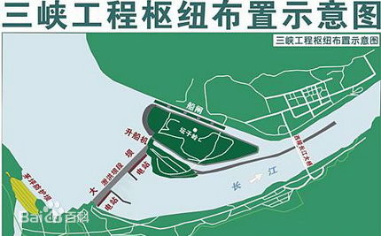
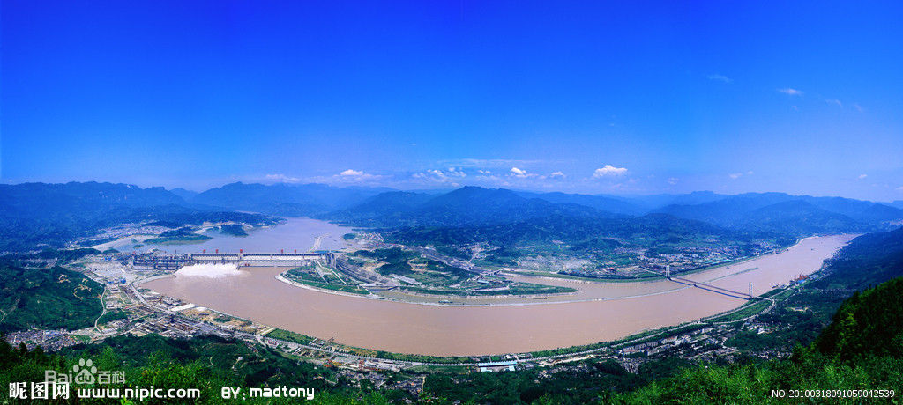
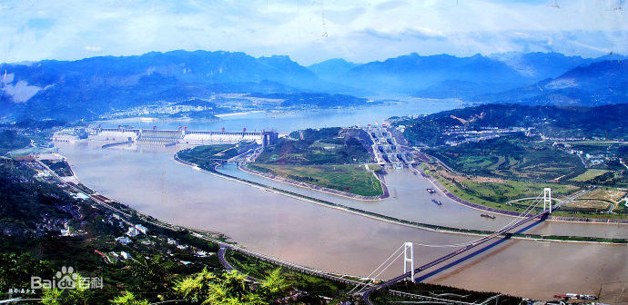
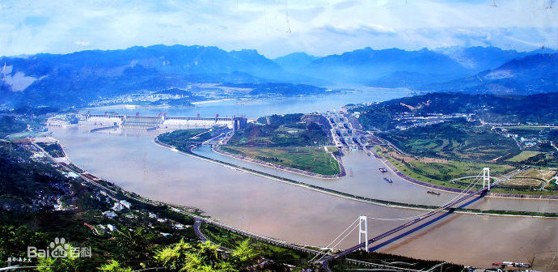

长江三峡西起重庆奉节县白帝城，东至湖北宜昌市南津关，全长193千米。沿途两岸奇峰陡立、峭壁对峙，自西向东依次为瞿塘峡、巫峡、西陵峡。
自西向东主要有三个大的峡谷地段：重庆瞿塘峡、重庆巫峡和湖北西陵峡，三峡因而得名。三峡两岸高山对峙，崖壁陡峭，山峰一般高出江面1000-1500米。最窄处不足百米。三峡是由于这一地区地壳不断上升，长江水强烈下切而形成的。
三峡大坝位于中国湖北省宜昌市境内，距下游葛洲坝水利枢纽工程38公里；是当今世界最大的水利发电工程――三峡水电站的主体工程、三峡大坝旅游区的核心景观、三峡水库的东端。
三峡大坝工程包括主体建筑物及导流工程两部分，全长约2309m，坝高185m，工程总投资为4954.6亿元人民币，于1994年12月14日正式动工修建，2006年5月20日全线修建成功。
大坝利处：防洪；发电；蓄水北调；促进航运。弊端：下游洄游鱼类与长江特有鱼类受到影响，部分生物将面临濒危、灭绝；突发地质灾害增多；微地震明显增加。
同时，三峡大坝的完工转移了超过39亿立方米的水到海拔175米的高度，根据美国太空总署的计算，这人为的减缓了地球自转，使每天都比过去延长0.00000006秒。
三峡大坝建成后，将形成从宜昌到重庆绵延650公里的人工湖.
瞿塘峡西起奉节县白帝山，东迄巫山县大溪镇，长八公里，是三峡中最短的一个，却最为雄伟险峻,峡以“雄”著称。西端入口处，两岸断崖壁立，高数百丈，宽不及百米，形同门户，名“夔门”[1] ，素有“夔门天下雄”之称；左边的名为赤甲山，右边的名为白盐山，不管天气如何，总是迂出一层层或明或暗的银辉。长江辟此一门，浩荡东泻，两岸悬崖峭壁如同刀削斧砍，山高峡窄，仰视碧空，云天一线，峡中水深流急，江面最窄处不足五十公尺，波涛汹涌，奔腾呼啸，令人惊心动魄。瞿塘峡虽短，却能“镇全川之水，扼巴鄂咽喉”，古人形容瞿塘峡“案与天关接，舟从地窟行”，沿江可见古栈道遗址、风箱峡古代悬棺、分壁墙、凤凰饮泉、倒吊和尚等奇观，其中分壁墙上布满了历代碑刻，十分可观。
巫峡自巫山县城东大宁河起，至巴东县官渡口止，全长46公里，有大峡之称。巫峡绮丽幽深，以俊秀著称天下。它峡长谷深，奇峰突兀，层峦叠嶂，云腾雾绕，江流曲折，百转千回，船行其间，宛若进入奇丽的画廊，充满诗情画意。“万峰磅礴一江通，锁钥荆襄气势雄”是对它真实的写照。峡江两岸，青山不断，群峰如屏，船行峡中，时而大山当前，石塞疑无路；忽又峰回路转，云开别有天，宛如一条迂回曲折的画廊。巫峡两岸群峰，它们各具特色。
西陵峡，西起秭归县香溪河口，东至宜昌市南津关，全长100余公里，西陵峡是长江三峡中最长的峡谷。因位于楚之西塞和夷陵（宜昌古称）的西边，故叫西陵峡，是三峡中最长的一个峡。自上而下，共分4段：香溪宽谷，西陵峡上段宽谷，庙南宽谷，西陵峡下段峡谷。沿江有巴东、秭归、宜昌3座城市。
 
 
